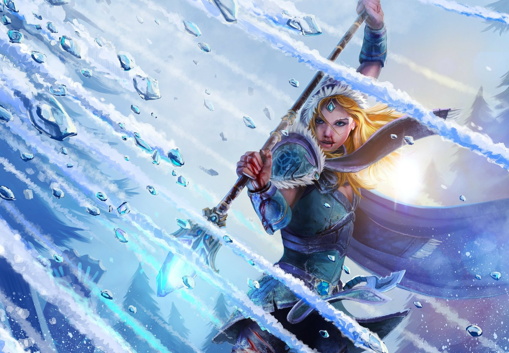
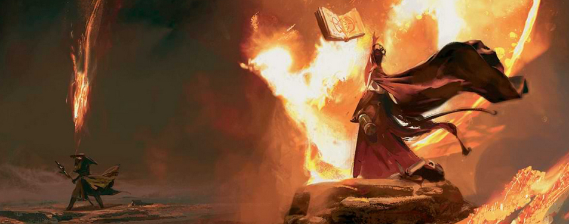
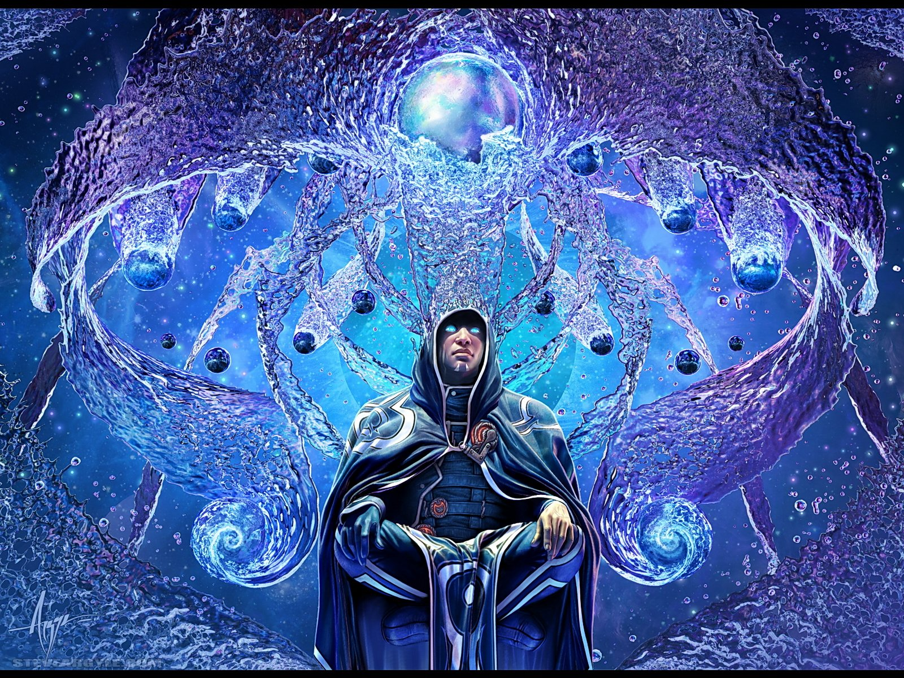
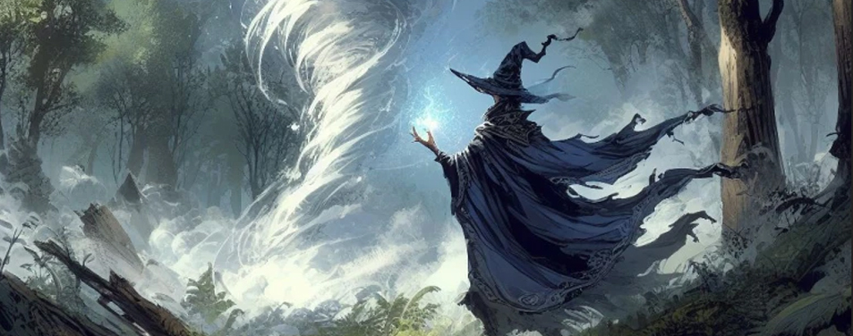
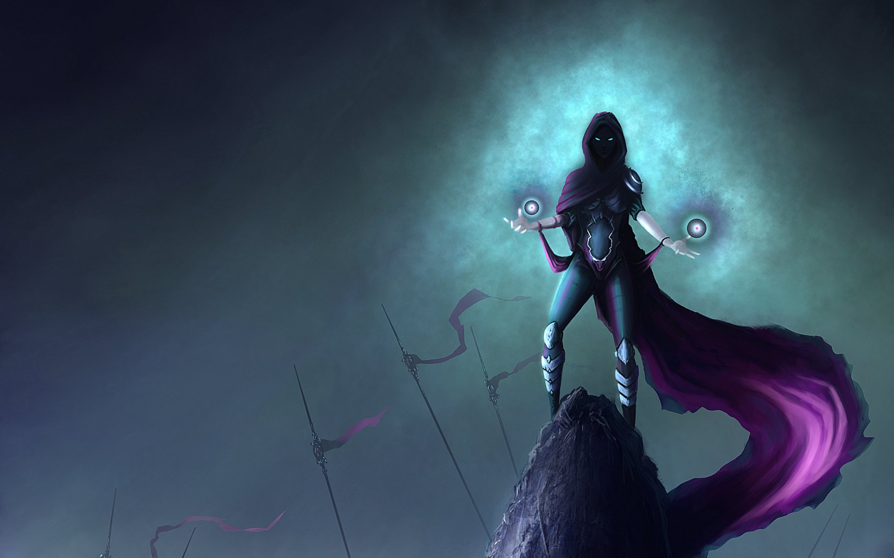
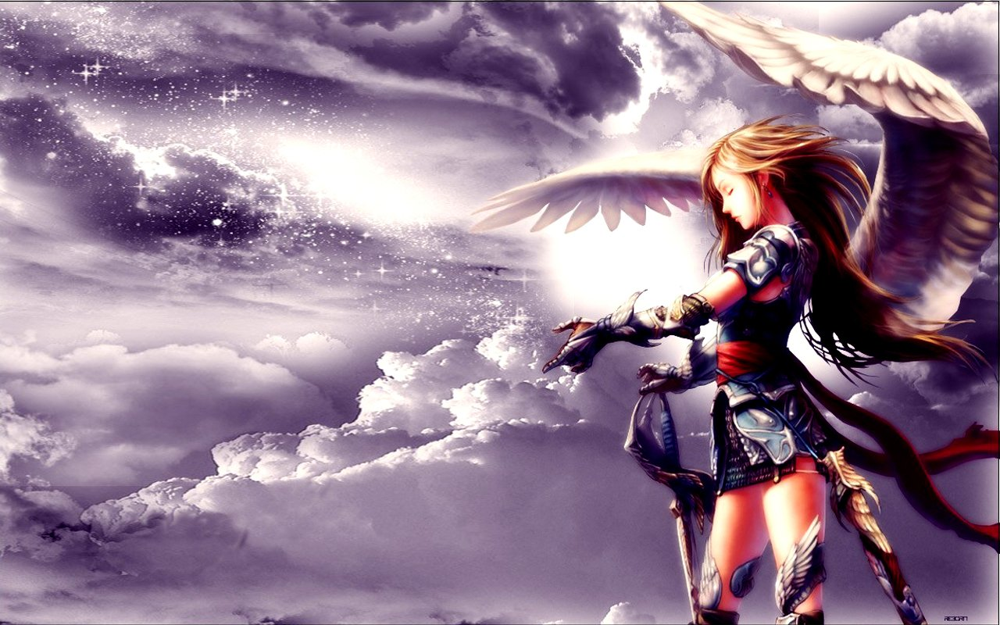

Hielo
El hielo representa la quietud y la preservación. Los magos que dominan este arte son expertos en conjurar tormentas de nieve, escudos de cristal helado y ataques que congelan hasta los corazones más valientes. La magia de hielo requiere serenidad, concentración y la capacidad de mantenerse firme en las adversidades.
Fuego
La magia del fuego simboliza el poder de la destrucción y la renovación. Los hechiceros de este elemento son capaces de controlar llamas abrasadoras, invocar explosiones de calor y hasta crear formas vivas de fuego. Es una magia que exige voluntad férrea y pasión, pero también cuidado, ya que un mal control puede llevar al caos total.
 Aqua
Aqua
La magia del aqua fluye con la misma adaptabilidad que su elemento. Sus practicantes pueden manipular corrientes, crear escudos líquidos e incluso invocar lluvias torrenciales o tsunamis devastadores. Es un elemento de equilibrio, esencial para la vida y a la vez capaz de destruir cuando se desata sin control.
 Vento
Vento
Ligera y veloz, la magia del aire da a sus usuarios el poder de controlar el viento, invocar tornados y moverse con rapidez incomparable. Es un arte que requiere un espíritu libre y una mente ágil, pero también un entendimiento profundo de los flujos que conectan todo en el universo.
Oscuridad
La magia de la oscuridad explora los misterios del alma y los confines de lo desconocido. Sus adeptos dominan sombras, ilusiones y poderes que invocan el miedo. Aunque peligrosa, la oscuridad no es intrínsecamente maligna; su verdadero propósito es revelar lo oculto y proteger a los suyos en el anonimato.
Luz
La magia de la luz encarna la esperanza, la curación y la protección. Los magos que la practican son capaces de curar heridas, invocar rayos de energía purificadora y disipar las sombras más densas. Es un arte que requiere pureza de corazón y un compromiso con la bondad.
